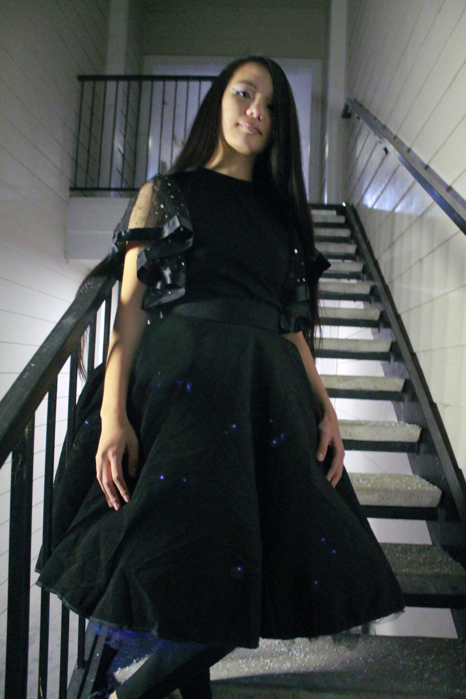

I've wanted to do this project since August. That was when I decided to apply for the Brooke Owens Fellowship. The multimedia essay prompts spoke directly my passion for combining artistic and technical creativity. Here is a display of my love for a technical challenge, creating with my hands, and the starry night sky.
